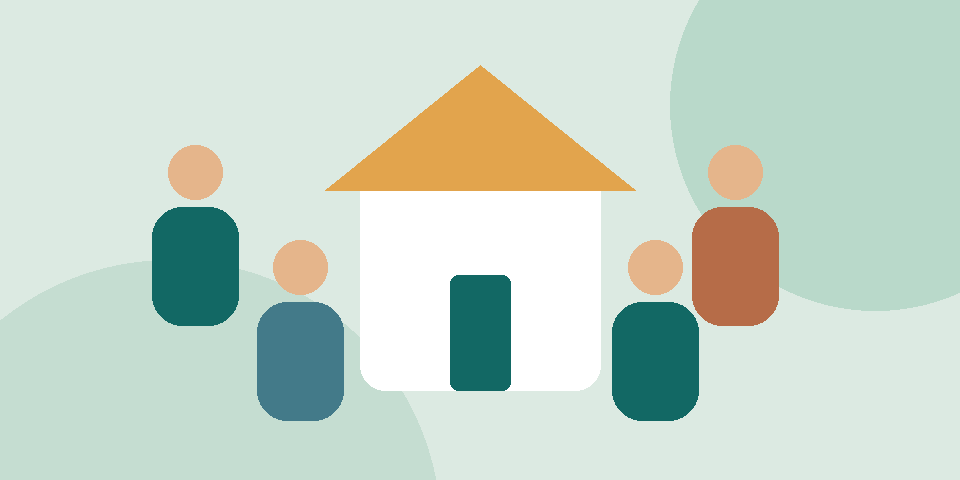

Educação, solidariedade e participação comunitária.

A Transformar é uma ONG fictícia que representa uma iniciativa de apoio a famílias em situação de vulnerabilidade. Este site demonstra como apresentar ações sociais e organizar o cadastro de interessados.
Promover oportunidades por meio da educação, do apoio comunitário e da colaboração entre voluntários.
Conheça nossos projetosDados ilustrativos: os contatos abaixo não são canais reais de atendimento.
E-mail: contato@example.org
Telefone de exemplo: (82) 99999-0000
Endereço fictício: Rua Exemplo, 123 — Maceió, AL.
As ações propostas neste projeto acadêmico integram educação, segurança alimentar e participação comunitária.
O projeto prevê oportunidades para pessoas interessadas em compartilhar seu tempo e conhecimento.
As contribuições previstas apoiariam as oficinas e as campanhas de alimentos.
Este site não recebe dinheiro nem fornece chaves de pagamento. As campanhas são fictícias.
Demonstração acadêmica: utilize dados fictícios. Nenhum dado é enviado ou salvo.
Campos com * são obrigatórios.
Verificação concluída
Dados fictícios validados. Nada foi enviado ou salvo.